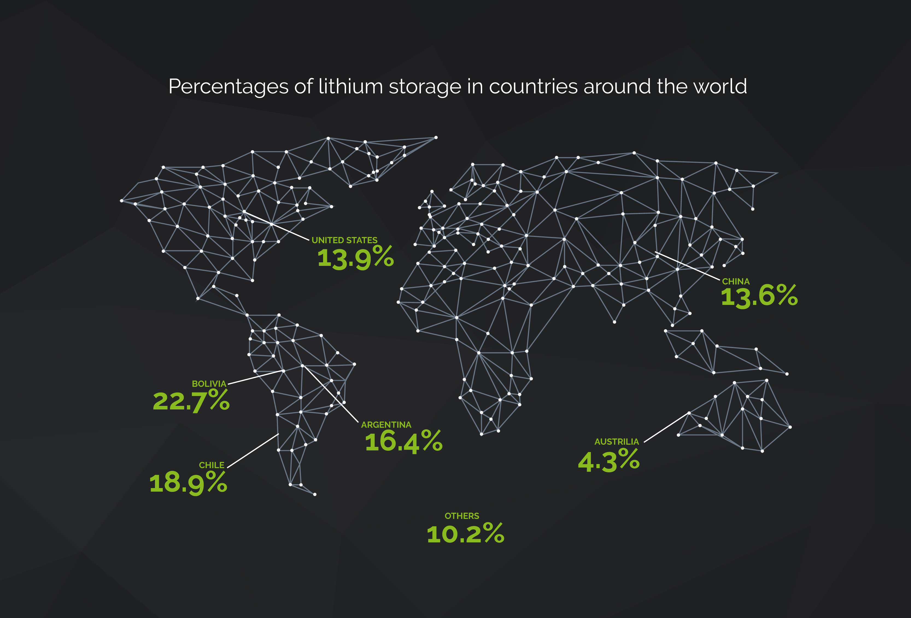

Lithium extraction may be Bolivia’s last hope to pull itself out of centuries of poverty and exploitation. Do they have what it takes to become a global player in the emerging lithium economy?
The towering mountains of the high Andean Plateau seem unmovable, static giants standing against a thin blue sky. But ancient Bolivian legend holds that long ago, the towering volcanoes of the altiplano could actually move and speak to one another. According to the myth, the only female volcano was universally beloved and courted by the others. But when she became pregnant and gave birth to a small volcano, the other volcanoes were so jealous they banished her baby to a far off land.
The gods were furious at the squabbling volcanoes, and as punishment they took away the volcanoes’ ability to move and speak. Unable to reach her baby, a devastated Tunupas mourned the loss of her child. Her salty tears and the breast milk poured out onto the arid landscape, creating the great Salar de Uyuni—the largest salt flat in the world.
Beneath this desolate, cracked landscape, lies the word’s largest deposits of lithium—the element that powers our lives.
When you speak with Bolivians about lithium the word “sueno” comes up again and again. Dream. For decades that’s all lithium extraction has been—an unrealized dream. Bolivia’s vast lithium resources—by many estimates at least half of the world’s lithium reserves—have never been tapped. But after years of false starts, it seems that the impoverished nation may at last be on track to become a major player in the world’s lithium industry.
Bolivia’s complicated relationship to its natural resources began centuries ago. In TK when the Spanish began mining the country for silver, and in the years since, Bolivia has been mined for silver, tin, [add any others here], yet its citizens have seen very little reward from their mineral-rich earth. For centuries, this landlocked country has been the victim of the so-called “resource curse”—a label for a country with an abundance of valuable natural resources that is unable to capitalize on its mineral wealth to develop a strong economy.
Historically much of Bolivia’s mineral wealth has flowed out of the country. “What usually happens is a foreign company will work together with a national company, because the national company won’t have the expertise or funds,” Ximena Warnaars explained. “Then the foreign company will take all the minerals and all the money and give a little back to the national company.”
Warnaars, an environmental anthropologist with a PhD in mining, works on indigenous and environmental issues in Bolivia, Colombia, Ecuador, and Peru for EarthRights International. “Mining is a complicated story in Bolivia,” she said. “They live with mining, it’s part of everyone’s livelihoods. It’s embedded in their culture. There are little mining gods they pray to that will help them show where the gold is.”
Bolivia’s relationship to its mineral wealth went through some significant changes once President Evo Morales took office in 2006. Morales, Bolivia’s first indigenous president, promised to return Bolivia’s natural wealth to its citizens and soon after he was elected, he began nationalizing oil and gas industries, much to the surprise of the foreign companies working on mining projects in Bolivia.
Morales has called lithium the “hope of humanity” and Bolivia’s new constitution, enacted in TK, guarantees that the nation’s natural resources belong to the Bolivian people. But whether or not his government’s changes will be able create a new model for development in the impoverished country remains to be seen. Many are doubtful of whether these policies will truly allow Bolivians to reap the reward—and that’s assuming the lithium is extracted in the first place.
On a remote corner of the Salar—a 2-hour drive down a bumpy dirt road from the small city of Uyuni and a couple of miles past the small, dusty curiously named town of Rio Grande sits Bolivia’s first lithium extraction plant, Llipi. It is not a welcoming place. The area is under military control, and the plant is heavily guarded by men in fatigues.
Beyond the closed gate, a handful of low buildings are surrounded by mounds of material covered in plastic tarps. This small operation represents the beginning of Bolivia’s lithium dreams—here the first Bolivian workers are being trained in lithium extraction.
A few miles past the plant the salar emerges on the horizon, an endless white landscape cracked in perfect polygons. The plant’s dirt road extends into the salar like a runway. Silhouetted against the blinding white of the salt flat, workers in full body suits and hard hats pile rocks into metal mesh cages to separate the narrow raised road from the salar. This road will be used to transport the lithium-rich solution from the brine pools to Llipi for extraction.
The Llipi plant represents the first step in what Morales’ government hopes will be a complete production cycle—from mining the raw materials to manufacturing batteries, Bolivia plans to create a full chain of production right here on its own soil within the next few years. According to the government, this operation will be positioned to compete with the current South American exporters.
Most of the world’s lithium comes from deposits in Chile and Argentina. There, large foreign companies mine the reserves, supplying close to 80 percent of the world’s lithium. But much of this lithium is spoken for, having been pre-purchased by the current leading battery manufacturers. But if the market for lithium-ion technology continues to grow, as most experts expect it will, manufacturers will have to find new sources of lithium. This is the opportunity that Bolivia plans to capitalize on.
Luis Echazu leans back in his chair. Behind him is an enormous portrait of Evo Morales. “We are certain that in 5 years time Bolivia will produce at least 30,000 tons of lithium carbonate with a battery grade, a significant amount of this will be used inside the country for the purpose of manufacturing battery-related products: this means we’ll be producing cathode materials at an industrial level and eventually a battery manufacturing plant with cathodes made in Bolivia,” said Luis Alberto Echazu, the National Manager of Evaporatic Resources of COMIBOL (Corporación Minera de Bolivia) the government organization that oversees all lithium mining in the country.
To be certain of this production seems extreme. After decades of grand promises and little progress, many are skeptical that Bolivia can turn any of its lithium into usable carbonate—much less 30,000 tons. It doesn’t help that the government cloaks most of their plans in secrecy.
Lithium extraction from the earth is both expensive and labor intensive. Because of its chemical structure, lithium can not be mined on its own—in order to extract it from the earth, it is either mined from rock or from a salty brine. The massive deposits in Salar de Uyuni will be mined as brine. Bolivia is landlocked, with very little water. What little water there is goes toward the region’s agriculture economy. Large-scale extraction will require a tremendous amount of water—water the country doesn’t have.
Many have pointed to Bolivia’s false starts as a sign that the country has missed the boat. But according to Echazu, this measured pace is intentional. “Some so-called experts tried to convince us to start with a massive production, but we know that wasn’t the best course of action because both the demand and the price were slowly rising,” Echazu said. “We hope this will continue, but in the capitalist system nothing is certain.”
Meanwhile, as Bolivia continues its covert plans in the Salar, in another desert, 5,300 miles away, Elon Musk is building the largest battery manufacturing plant in the world. When the Tesla Gigafactory is completed in 2020 it will demand as much lithium as the rest of the battery factories in the world, combined. But whether Bolivia can capitalize on the world’s desperate need for more lithium to transform the well-being of its impoverished citizens—turning suenos into realities—remains to be seen.